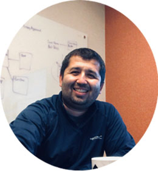

Great to meet you, I'm Bunyod!
I am a Data Engineer Developer at Insight2Profit, a rapidly growing pricing consulting firm. I really enjoy working with data and solving complex data problems. As a data engineer, I am involved with all data related aspects of the consulting engagement including discovery, measurement, and continuous improvements. Some of my responsibilities are to design database solution that is needed for discovery and implementation, while planning for longer term supporting needs of measurement and continuous improvement. I also make certain data available for Data Scientists and Software developers to build models and custom tools. While I am engineering development database for consultants and data scientists, I ensure that my data load pipelines are automated, my procedures are repeatable, contains validations and proper notifications are in place in case anything fails. After fully automating client's database and meeting all the requirement, my responsibilities include troubleshooting production issues, adding additional data sources, and supporting services and custom tools.
I have a Master's degree in Statistics from Miami University and I have Bachelor's degree in Economics and Mathematics. I made this simple website to share my projects with friends and potential employees. Please feel free to browse through my projects. Unfortunately, most of my projects are from my graduate school and a few are after the school.
Besides Data Engineering and Statistics, I have a passion for sports, cooking dishes from different countries, and contributing to the development of higher education. I am always open to working on new projects and contribute as much as I can. If you have a suggestion or a project you would like to discuss, please feel free to contact me. Thank you for visiting my site!
You can view my resume here.
I am a Data Engineer Developer at Insight2Profit, a rapidly growing pricing consulting firm. I really enjoy working with data and solving complex data problems. As a data engineer, I am involved with all data related aspects of the consulting engagement including discovery, measurement, and continuous improvements. Some of my responsibilities are to design database solution that is needed for discovery and implementation, while planning for longer term supporting needs of measurement and continuous improvement. I also make certain data available for Data Scientists and Software developers to build models and custom tools. While I am engineering development database for consultants and data scientists, I ensure that my data load pipelines are automated, my procedures are repeatable, contains validations and proper notifications are in place in case anything fails. After fully automating client's database and meeting all the requirement, my responsibilities include troubleshooting production issues, adding additional data sources, and supporting services and custom tools.
I have a Master's degree in Statistics from Miami University and I have Bachelor's degree in Economics and Mathematics. I made this simple website to share my projects with friends and potential employees. Please feel free to browse through my projects. Unfortunately, most of my projects are from my graduate school and a few are after the school.
Besides Data Engineering and Statistics, I have a passion for sports, cooking dishes from different countries, and contributing to the development of higher education. I am always open to working on new projects and contribute as much as I can. If you have a suggestion or a project you would like to discuss, please feel free to contact me. Thank you for visiting my site!
You can view my resume here.